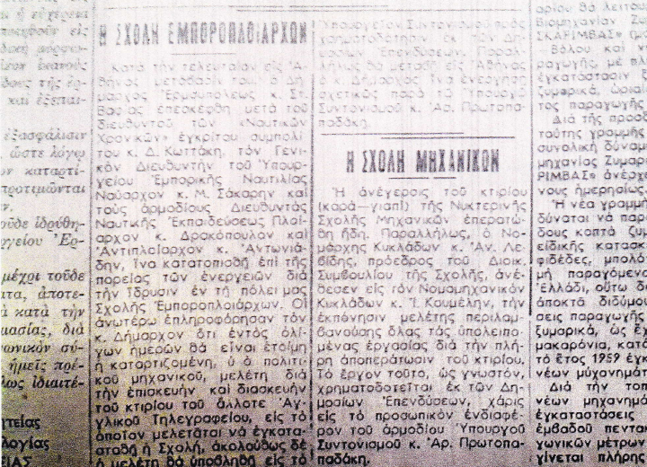

ΣΥΡΟΣ 30 ΣΕΠΤΕΜΒΡΙΟΥ 1960
ΕΦΗΜΕΡΙΔΑ ΤΟ ΘΑΡΡΟΣ
"ΘΑ ΙΔΡΥΘΗ ΣΧΟΛΗ ΕΜΠΟΡΟΠΛΟΙΑΡΧΩΝ"
Στα πλαίσια των γινομένων εισηγήσεων προς τον Υπουργό Συντονισμού κ. Αρ. Πρωτοπαπαδάκη κατά την προ μηνών άφιξή του στη Σύρο, για την ανάπτυξη της ναυτικής και τεχνικής εκπαίδευσης στην πόλη μας, για τη δημιουργία των προϋποθέσεων της εξασφάλισης επαγγελματικού προσανατολισμού στους νέους της πόλης μας, βάσει των φυσικών προσόντων της Σύρου και της ναυτικής και μηχανουργικής παραδόσεως, αποφασίστηκε, κατόπιν του δηλωθέντος προς αυτό ενδιαφέροντος του κ. Πρωτοπαπαδάκη, η ίδρυση στην πόλη μας Σχολής Εμποροπλοιάρχων, ισότιμη με τη σχόλη Ασπρόπυργου, Ύδρας και Κύμης.
Για τον σκοπό αυτόν αφίχθησαν στην πόλη μας το μέλος του Διοικητικού Συμβουλίου Ναυτικής Εκπαίδευσης συμπολίτης κ. Δ. Κωττάκης, ο Διευθυντής Ναυτικής Εκπαίδευσης και Εργασίας Πλοίαρχος Λ.Σ. κ. Δρακόπουλος και ο Τμηματάρχης Ναυτικής Εκπαίδευσης Αντιπλοίαρχος Λ.Σ. κ Αντωνιάδης. Όλοι τους συνεργάστηκαν με το Δήμαρχο κ Στ. Βαφία και το Λιμενάρχη Σύρου κ. Τσαπράλη για την εξεύρεση κατάλληλου οικήματος για τη στέγαση της Σχολής. Γι' αυτό επισκέφτηκαν τα κτίρια του άλλοτε Αγγλικού Τηλεγραφείου και του παλαιού Νοσοκομείου, επέλεξαν το πρώτο το οποίο ήταν θαυμάσιο για το σκοπό αυτό. Στη συνέχεια αφίχθησαν Πολιτικοί Μηχανικοί του Υπουργείου Εμπορικής Ναυτιλίας για λήψη στοιχείων για τη σύνταξη μελέτης των αναγκαίων επισκευών, διαρρυθμίσεων κλπ., για την οποία ο Υπουργός Συντονισμού κ. Αρ. Πρωτοπαπαδάκης είπε ότι θα διαθέσει την απαιτουμένη πίστωση εκ των Δημόσιων Επενδύσεων.
Η Σχολή προβλέπεται να λειτουργήσει από το προσεχές έτος.
ΣΥΡΟΣ 30 ΝΟΕΜΒΡΙΟΥ 1960
ΕΦΗΜΕΡΙΔΑ ΤΟ ΘΑΡΡΟΣ
"Η ΣΧΟΛΗ ΕΜΠΟΡΟΠΛΟΙΑΡΧΩΝ"
Κατά την τελευταία μετάβασή του στην Αθήνα, ο Δήμαρχος Ερμούπολης κ. Στ. Βαφίας επισκέφτηκε μετά του διευθυντή των "Ναυτικών Χρονικών" εγκρίτου συμπολίτη του κ. Δ. Κωττάκη, τον Γενικό Διευθυντή του Υπουργείου Εμπορικής Ναυτιλίας Ναύαρχο κ. Σάκαρη και τους αρμόδιους Διευθυντές Ναυτικής Εκπαιδεύσεως Πλοίαρχο κ. Δρακόπουλο και Αντιπλοίαρχο κ. Αντωνιάδη, για να κατατοπισθεί για την πορεία των ενεργειών για την ίδρυση στην πόλη μας Σχολής Εμποροπλοιάρχων. Οι ανωτέρω πληροφόρησαν τον κ. Δήμαρχο ότι εντός ολίγον ημερών θα είναι έτοιμη η καταρτιζόμενη, του Πολιτικού Μηχανικού, μελέτη για την επισκευή και διασκευή του κτιρίου του άλλοτε Αγγλικού Τηλεγραφείου, στο οποίο μελετάται να εγκατασταθεί η Σχολή, ακολούθως δε η μελέτη θα υποβληθεί στο Υπουργείο Συντονισμού προς χρηματοδότηση εκ των Δημοσίων Επενδύσεων. Παράλληλα θα μεταβεί στην Αθήνα ο κ. Δήμαρχος για να ενεργήσει σχετικώς με τον Υπουργό Συντονισμού κ. Αρ. Πρωτοπαπαδάκη.

ΣΥΡΟΣ 15 ΦΕΒΡΟΥΑΡΙΟΥ 1961
ΕΦΗΜΕΡΙΔΑ ΤΟ ΘΑΡΡΟΣ
"ΙΔΡΥΘΗ Η ΣΧΟΛΗ ΕΜΠΟΡΟΠΛΟΙΑΡΧΩΝ"
Η νέα αυτή κατάκτηση της Σύρου οφείλεται στο έντονο ενδιαφέρον των κ. κ. Υπουργών Συντονισμού και Εμπορικής Ναυτιλίας και του κύριου Υφυπουργού Οικονομικών. Θα εγκατασταθεί στο κτίριο του τέως Αγγλικού Τηλεγραφείου. Προβλέπεται να λειτουργήσει από το προσεχές σχολικό έτος.
Ο Δήμαρχος Ερμούπολης κ. Βαφίας, γύρισε από την Αθήνα και ανακοίνωσε ότι η ίδρυση στην πόλη μας της δημόσιας σχολής πλοιάρχων του εμπορικού ναυτικού αποτελεί γεγονός. Ως γνωστόν η ίδρυση αυτής της σχολής, περιήλθε μεταξύ των ετοιμότατων της πόλεως τα οποία περιέλαβαν ο κ. Δήμαρχος εις την εισήγηση του προς τον Υπουργό Συντονισμού κ. Απ. Πρωτοπαπαδάκη κατά τη γινομένη προ μηνών στη νομαρχία ευρέα σύσκεψη των τοπικών παραγόντων, επί την άφιξη του κ. Υπουργού, προς εξέταση των ζητημάτων της Σύρου. Ως αναγράψαμε σε παλαιότερον φύλλο μας, το αίτημα αυτό υιοθετήθηκε από τον κ. Υπουργό, με το ενδιαφέρον που επιδεικνύει αυτός για τα ζητήματα της Σύρου, διαβιβάστηκε εις τον Εμπορικής Ναυτιλίας συνάδελφο του κ. Γ. Ανδριανόπουλο, και συγκρότησαν επιτροπή εκ του Διευθυντού Ναυτικής Εργασίας και Εκπαιδεύσεως Πλοίαρχου Λ.Σ. κ. Δρακοπούλου, του τμηματάρχη Ναυτικής Εκπαίδευσης Αντιπλοίαρχου Λ.Σ. κ. Αντωνιάδη και του διευθυντού των κ. Δ. Κωττάκη, μέλους του διοικητικού συμβουλίου Δημοσίων Σχολών Εμπορικού Ναυτικού προς εξέταση των κτιρίων της πόλεώς μας, τα οποία προτάθηκαν για τη στέγαση της εν λόγω σχολής. Η επιτροπή αφίχθη και εξέτασε τα κτίρια του τέως Αγγλικού Τηλεγραφείου και του παλαιού νοσοκομείου, και προτίμησε ως καταλληλότερο το πρώτο, μετά τη διενέργεια των απαραίτητων επισκευών, τις δαπάνες των οποίων υποσχέθηκε να διαθέσει εκ των δημοσίων επενδύσεων ο Υπουργός Συντονισμού κ. Πρωτοπαπαδάκης. Εν συνεχεία εξεπονήθη μέριμνα του Υπουργείου Εμπορικής Ναυτιλίας, η σχετική μελέτη να γίνει από Πολιτικό Μηχανικό. Να αναγγελθεί η εκπόνηση της μελέτης εις τον κ. Δήμαρχο, αυτός με τη σειρά του να μεταβεί στην Αθήνα για περαιτέρω προώθηση του ζητήματος. Πράγματι κατά την παραμονή του κ. Δημάρχου στην Αθήνα υπεγράφη υπό τον κ. Υπουργό Εμπορικής Ναυτιλίας η απόφαση της ιδρύσεως της Σχολής, έτσι έχει αυτή αγγίξει τα δυο εκατομμύρια δραχμές. Οι σχετικές εργασίες θα επιδιωχθούν να εκτελεστούν όσο το δυνατόν γρηγορότερα ώστε να καταστεί δυνατόν να λειτουργήσει η σχολή από το προσεχές σχολικό έτος. Κατά τις επισκευές προβλέπονται αίθουσες διδασκαλίας, προμήθεια εποπτικών μέσων, γραφείων κλπ, και η δημιουργία κοιτώνων για 80 μαθητές. Οι μαθητές θα είναι εσωτερικοί. Θα εισάγονται κατ' έτος 40 μαθητές απόφοιτοι γυμνασίου ή Εμπορικής Σχολής. Η φοίτηση θα είναι διετής.
Η είδηση για την ίδρυση της παραπάνω Σχολής προκάλεσε ιδιαίτερη χαρά και ικανοποίηση μεταξύ των συμπολιτών μας. Διότι με αυτόν τον τρόπο συμπληρώνεται ο κύκλος της Ναυτικής και Τεχνικής Εκπαίδευσης στην πόλη μας, με τη λειτουργία της ανωτέρω Σχολής Εμποροπλοιάρχων, τη λειτουργία της Νυκτερινής Σχολής Μηχανικών - της οποίας το ανεγειρόμενο κτίριο, χρηματοδοτήθηκε και αυτό εκ των δημοσίων επενδύσεων από τον κ. Υπουργό Συντονισμού. Θα είναι έτοιμο εντός του έτους- και της από μηνών ιδρυθείσης και λειτουργούσης Σχολής Τεχνικής Μαθητείας λεβητοποιών. Με τις τρεις αυτές Σχολές ανοίγονται ευρείς ορίζοντες για τον επαγγελματικό προσανατολισμό προς τη Θάλασσα, των νέων της Σύρου και των Κυκλάδων εν γένει. Η πόλη μας με τη ναυτική και μηχανουργική της παράδοση θα καταστεί φυτώριο επανδρώσεως της Εμπορικής μας Ναυτιλίας με αξιωματικούς καταστρώματος και μηχανής, όπως και τεχνικών βιομηχανίας επισκευής πλοίων.
Από την επίσκεψη των αρμοδίων του Υπουργείου Εμπορικής Ναυτιλίας για τη διασκευή του κτιρίου του Αγγλικού Τηλεγραφείου προς στέγαση της Δημόσιας Σχολής Πλοιάρχων Σύρου. Από αριστερά ο Λιμενάρχης Σύρου Υποπλοίαρχος Λ.Σ. κ. Κ. Τσαπραλής, ο Διευθυντής Ναυτικής Εκπαίδευσης και Εργασίας Πλοίαρχος Λ.Σ. κ. Δρακόπουλος, ο διευθυντής των "Ναυτικών Χρονικών" κ. Δ. Κωττάκης, μέλος του Διοικητικού Συμβουλίου Δημοσίων Σχολών Εμπορικού Ναυτικού, ο Δήμαρχος Ερμούπολης κ. Στ. Βαφίας και ο Πολιτικός Μηχανικός του Ν.Α.Τ. κ. Κατζουράκης.